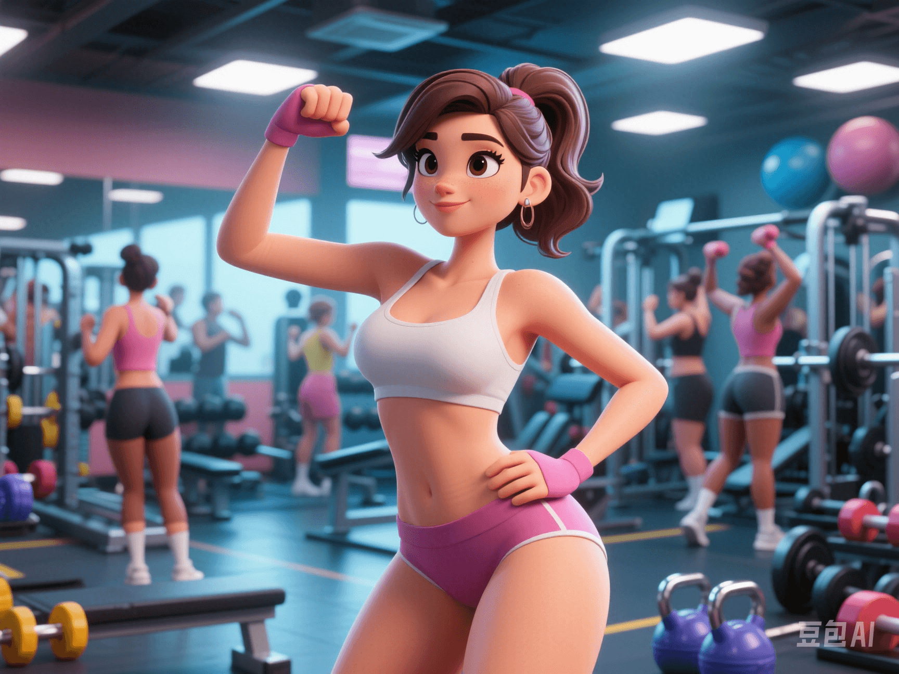

Creatine Is More Than a Fitness Supplement: It Can Boost Female Brain Function!
PeaceLove.Top Insights :2025-04-12
💡 Introduction
When it comes to 'creatine', many people immediately think of the trainers sweating in the gym 🏋️♀️. But did you know that the function of creatine goes far beyond building muscles? It may also be a 'hidden treasure' for improving women's cognitive ability and stress - resistance! 💎
🧪 Scientific Research Findings: Creatine Helps Women's Brains Function More Efficiently ⚡
According to a recent study in the Journal of Physiology, researchers found that: 👉 After taking 5 grams of creatine daily for several weeks, women's memory and stress - resistance improved significantly. This study used a group of healthy women aged 18 - 35 as samples and conducted cognitive tests, memory assessments, and emotional stress stimulation tests. The results showed that women who took creatine were more calm, organized, and efficient when dealing with multi - tasks, memory tests, and simulated stress scenarios 🧘♀️.
🧠 How Does Creatine 'Nourish the Brain'? Unveiling the Mechanism 🔍
We all know that creatine is mainly stored in muscles to provide energy for short - term high - intensity exercise 💪. In fact, the brain is also an energy - intensive organ, especially when concentrating, learning, or dealing with stress, it has a very high demand for energy. ✨ The role of creatine in the brain:
- 🚀 Provide instant energy: The creatine and phosphocreatine system provide rapid energy support for brain cells during 'high - load thinking'.
- 🧩 Protect neurons: Creatine helps reduce the damage of nerve cells under stress, acting as a 'cognitive shield' 🛡️.
- 🌿 Regulate mood and anxiety: Some studies have found that creatine can also affect the balance of dopamine and serotonin in the brain to a certain extent, thus relieving anxiety 😌.
👩🔬 Why Are Women More Worthy of Trying Creatine Supplementation?
1️⃣ Women Naturally Have Lower Creatine Reserves
Due to lower muscle mass compared to men, women have less natural creatine reserves. Therefore, the 'effect gain' after supplementation is relatively more obvious 📈.
2️⃣ Cognitive Fluctuations Related to the Menstrual Cycle
Some women may feel a decline in attention and slower reaction during pre - menstrual or menstrual periods. Researchers speculate that this may be related to energy supply, and creatine supplementation may alleviate this situation 🩸🧠.
3️⃣ Facing Higher 'Daily Stress'
With work, family, and emotions, multiple pressures often make women's brains 'work continuously' ⚙️. Creatine, as an energy backup for the brain, can stabilize the state at critical moments 💆♀️.
📦 How to Supplement Creatine Scientifically?
- ✅ Dosage recommendation: 3 - 5 grams of creatine monohydrate per day is enough, and there is no need for a 'loading phase' 🚫.
- ✅ Best time: It can be taken with meals or 1 hour before high - mental - activity tasks ⏰.
- ✅ Form selection: Powder is the most common form, and there are also chewable tablets and capsules. Pay attention to choosing regular brands to avoid adulteration ⚠️.
💬 Real - user Feedback: Creatine Not Only Makes You 'Run Better' but Also 'Think Better'!
Many users have shared their changes after taking creatine on social platforms:
- 💬 'After taking creatine for two weeks, I can take notes faster. I feel my mind works very smoothly when writing papers!'
- 💬 'I used to be inattentive during meetings, but recently I've become more alert after taking creatine!'
- 💬 'I'm a fitness girl. After adding creatine, I unexpectedly found it easier to handle stress.'
✅ Conclusion: Is Creatine the 'Energy Booster' for the Brain? ✨
Although creatine has always been labeled as a 'fitness supplement', more and more scientific research is revealing its cognitive potential. For women, it is not only a partner for body - shaping but also a secret weapon for improving memory and enhancing stress - resistance 🧠💥! 📌 Special reminder: Although creatine is good, it still needs to be used scientifically according to individual conditions. If you have abnormal kidney function, please consult a doctor before supplementation 🩺!
🌟 Add some 'fuel' to your brain and charge up your focus, memory, and stress - resistance! Let's enter the mental awakening mode together ⚡💃📚